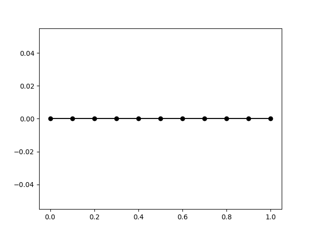
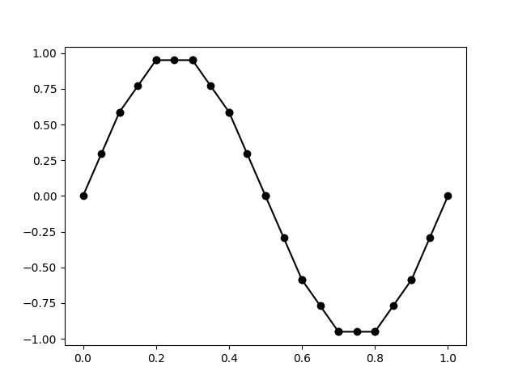
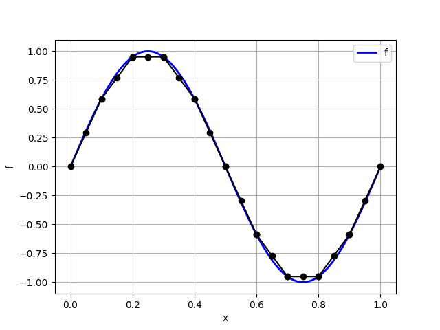
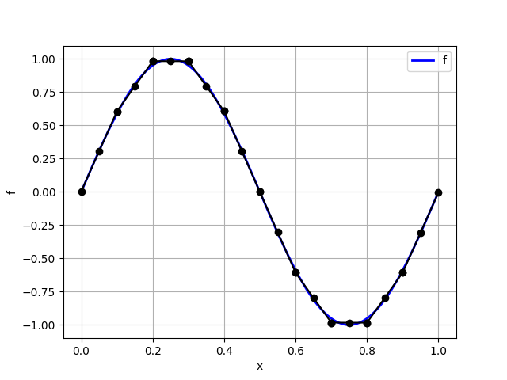
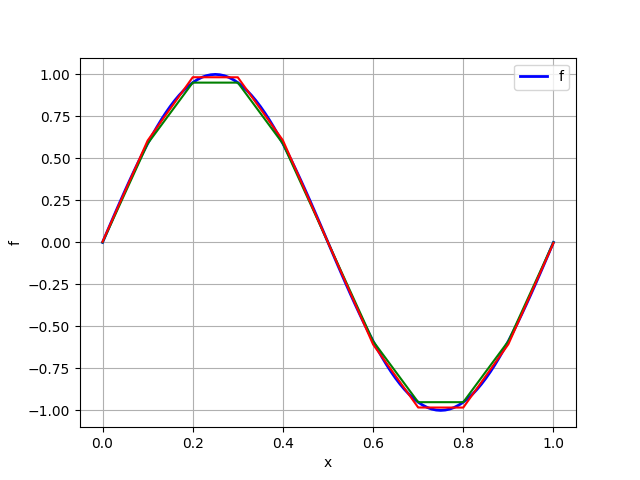
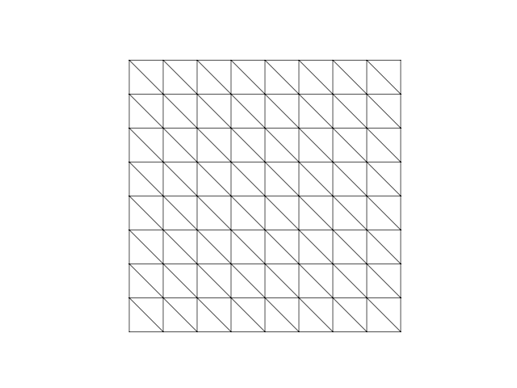
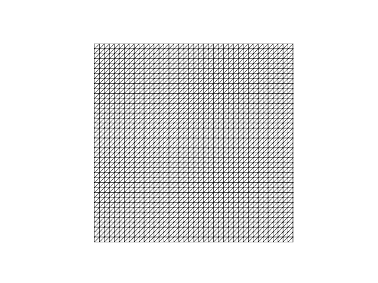
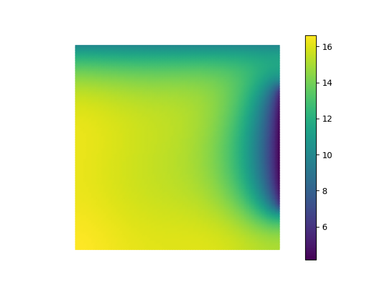

An unofficial scikit-fem tutorial
This tutorial is still under development. It is expected to be fully ready by September 2026.
Author: Amuthan A. Ramabathiran
Email: aramabat@calpoly.edu
Aerospace Engineering, Cal Poly (San Luis Obispo)
No AI tools were used in creating the contents of this tutorial. For students learning how to implement finite element method using this tutorial, the use of generative AI tools is not recommended until they gain sufficient mastery of the underlying theoretical and computational concepts.
About this tutorial
This tutorial provides a simple hands-on introduction to implementing the Finite Element Method (FEM) using the scikit-fem library. The official documentation has a good description of the library along with several examples. This tutorial is complementary to the official documentation and is designed specifically for teaching FEM implementation. Several details that are not explicitly stated in the official documentation are included here to ease the learning process. The tutorial introduces differential equations of increasing complexity, starting with one dimensional examples, and culminating in three dimensional problems.
Why scikit-fem?
There are several excellent open-source FEM libraries like Fenics, Firedrake, NGSolve, Freefem, Deal.II, and many more! Each of these have dedicated user groups, advantages and disadvantages. This tutorial focuses on the scikit-fem library for the following reasons:
- It is written entirely in Python and requires only
numpyandscipyto install. This significantly reduces installation related issues in the classroom context. - It has a minimal and clean design that is useful from both the research and pedagogic viewpoints.
- It comes with a rich set of features, and is also relatively easy to extend when new features are needed.
- It is primarily a finite element assembly library. Any good linear solver library can be used to solve the resulting discretized equations.
- The source code is relatively small and easy to parse.
- The developers are very helpful when you run into issues.
In short, scikit-fem provides a simple, extensible, and clean framework to implement FEM for PDEs.
Who is this for?
This tutorial was primarily developed to help students get started with programming simple FEM simulations. This is also likely to be useful to researchers looking for a good Python-based FEM library.
Any and all feedback is welcome!
If you find this tutorial useful, or if you have any comments/suggestions for improvement, or if you want to share your experience using it to teach FEM, feel free to write to me at aramabat@calpoly.edu.
Linear second order ordinar differential equation
To start with, let us see how we can use scikit-fem to solve a simple second order ordinary differential equation. Consider the problem of finding a function \(u:[0,1] \to \mathbb{R}\) such that \(u(0) = u(1) = 0\), and
for \(x \in (0,1)\). Note that this problem can be solved exactly: the solution is \(u^\star(x) = \sin (2\pi x)\).
To solve this problem using FEM, we need to peform the following steps---these steps are standard and mostly similar to that in the scikit-fem documentation:
- Formulate the differential equation in weak form.
- Discretize the domain.
- Choose element type.
- Set up finite element space.
- Assemble stiffness matrix and load vector.
- Apply boundary conditions.
- Solve the discretized equations.
- Post-process solution to extract relevant information.
Let us look at each of these steps in turn.
1. Weak formulation
Put simply, a weak form of a Differential Equation (DE) requires that this DE is true on average. More precisely, we require that every weighted average of the DE is true.
In mathematical terms, we choose a test function \(v:[0,1] \to \mathbb{R}\) such that \(v(0) = v(1) = 0\), multiply the DE by \(v\), and integrate over the whole domain: We can now integrate the term on teh left hand side by parts to get Using the boundary conditions \(v(0) = v(1) = 0\) for the test function, we get the weak form of the DE as We now insist that this is true for every choice of test function \(v\) that vanishes at the endpoints of the interval \((0,1)\).
For future use, we can write the foregoing weak form as where \(a(\cdot,\cdot)\) is a bilinear function and \(l(\cdot)\) is a linear functional.
In scikit-fem, we can directly transcribe the weak form into appropriately decorated python functions. We first need to import scikit-fem:
Let us now focus on the right hand side of the weak form, which is the linear functional
To use this in scikit-fem, we extract the integrand, which is the functional \(v \mapsto f v\), where \(f\) is the function \(f(x) = 4\pi^2 \sin (2\pi x)\). We then implement this as a Python function decorated with the @skfem.LinearForm decorator, as shown below.
import numpy as np
@skfem.LinearForm
def l(v, ctx):
x = ctx['x']
f = 4 * np.pi**2 * np.sin(2 * np.pi * x[0])
return f * v
Let us unpack this. The @skfem.LinearForm decorator informs scikit-fem that the function that follows is to be interpreted as the integrand of a linear functional. Procedurally, scikit-fem expects such a function to have exactly two arguments, the first is the test function, which is the variable v here, and the second is a context variable, which is the variable ctx here. Think of the context variable as containing any other information that we need, other than the test function itself, to specify the linear form. In the present case, note that there is an explicit \(x\)-dependence in the definition of the linear functional \(l\). The context variable ctx is a catch-all variable that contains all this information. This is a very elegant design feature in scikit-fem which is very useful in practice---we will learn more about this as we progress through the tutorials. For now, think of the context variable ctx as a dictionary that stores relevant information in the standard key: value format.
Remark
The scikit-fem documentation uses symbols like w for the second argument to a @skfem.LinearForm-decorated function. We will consistently use the variable name ctx to explicitly identify it as a context variable.
To specify the linear functional \(l(v)\), we need to first extract the \(x\)-coordinate of any point in the domain. By default, the ctx variable has a key called 'x' that stores coordinate information. The coordinates of a point in the domain are thus contained in ctx['x']. For a 1D problem as in this case, the \(x\)-coordinate is obtained as ctx['x'][0].
Remark
Technically speaking, ctx['x'] stores the coordinates of the quadrature points in each element in the domain as a numpy.ndarray object. We will learn more about this later.
Remark
If you are wondering why there is a [0] at the end of ctx['x'][0], we will use a similar notation to extract other coordinates in higher dimensions. Thus, in a 2D setting, ctx['x'][0] will return \(x\)-coordinates of the global quadrature points, while ctx['0'][1] will return all the corresponding \(y\)-coordinates.
In the present case, we first extract the coordinate information in the variable x using x = ctx['x'], and subsequently define the function f(x) = 4\pi^2 \sin(2\pi x) as f = 4 * np.pi**2 * np.sin( 2 * np.pi * x[0] ). A really nice feature of scikit-fem is that everything is implemented using numpy internally and in a vectorized format, so you can freely use numpy constants and functions inside @sfem.<...>-decorated functions.
Once we have defined the function f as above, we can fully specify the integrand in the right hand side as f * v. As simple as that!
Remark
If you are wondering why we are storing only the integrand, and not the whole integral, we will use the this decorated function later during the assembly process to compute the value of the integral.
Let us now now look at the left hand side of the weak form, which is the bilinear function \(a(\cdot, \cdot)\) defined as
To use this in scikit-fem, we extract the integrand, which is the function \((u,v) \mapsto u' v'\), and implement it as a Python function decorated with the @skfem.BilinearForm, as shown below.
from skfem.helpers import dot, grad
@skfem.BilinearForm
def a(u, v, ctx):
return dot( grad(u), grad(v) )
There is a fair bit to unpack here. To start with, the @skfem.BilinearForm decorator informs scikit-fem that the function that follows is to be interpreted as the integrand of a bilinear form. Accordingly, the first argument, u here, is interpreted as the trial function, the second argument, v here, is interpreted as the test function, and the third argument, ctx here, is interpreted as a context variable.
We now have a new problem. The integrand contains the derivatives of the trial and test functions. How do we compute these? scikit-fem stores trial functions and test functions internally as an obect of type DiscreteField. A simple mental model you can have of an object of this type is a vector of values of this object stored at the global quadrature locations, along with additional functionality that uses finite element interpolate to compute derivatives. We will learn more about this in detail later. For now, it is sufficient to note that skfem.helpers has very convenient functions called grad (and a lot more!) that computes the gradient at the global quadrature points. The dot function is a little more subtle: it computes the inner product at the quadrature points, resulting in a scalar quantity at the global quadrature points. We will analyze this deeper in a later section.
Note that the context variable ctx is unused in the present case since the bilinear form is entirely specified by the trial and test functions only.
2. Discretize the domain
To compute the integrals in the definition of the bilinear form \(a\) and the linear form \(l\), the strategy adopted in FEM is to subdivide the domain into smaller elements and use an appropriate quadrature rule to numerically integrate integrals over each element to approximate the global integrals. Fundamental to all these operations is a mesh of the domain. In the present case, the domain is the interval \([0,1]\), and a mesh in this case is just a collection of non-overlapping intervals whose union is the whole interval. scikit-fem provides a convenient MeshLine function that takes a collection of ordered points in the interval (inclusive of endpoints) and creates a finite element mesh whose nodes are given by these points. For instance, a uniform mesh with 10 elements is created as follows:
The nodes of the mesh can be accessed using mesh.p, and the connectivity of the mesh can be accessed using mesh.t, both returning numpy.ndarray objects. Here are some typical outputs:
Note that scikit-fem uses a different convention than many other finite element software in how these arrays are shaped. The mesh.p array is of size dim x n_nodes where dim denotes the spatial dimension, which in this case is 1, and n_nodes denotes the number of nodes in the mesh, which in this case is 11. The connectivity matrix mesh.t is of size nne x n_elts, where nne is the number of nodes per element, which in the present case is 2, and n_elts denotes the number of elements in the mesh, which in the present case is 10.
The skfem.visuals.matplotlib module contains a draw method that can be used to visualize the mesh. This is a thin wrapper over matplotlib, which makes it very convenient to manipulate plots using standard Python commands.
This should return a plot as shown below:

scikit-fem constructs a lot of useful information based on the mesh data. For instance, the nodes on the boundary can be obtained using mesh.boundary_nodes().
3. Choose element type
Once we have discretized the domain, we next have to choose how we wish to interpolate a given function over any element in the mesh. This is often referred to as the choice of the element type and plays a key role in the finite element method. In the present case, let us choose the approximate solution to be linear over each element, and in a manner that makes it globally continuous. A function of this type is said to be continuous and piecewise linear, more commonly referred to as \(P_1\) in the finite element literature. scikit-fem comes with an exhaustive list of elements, and a reasonably simple procedure to create new element types when necessary. \(P_1\) elements in one dimension are created as follows:
scikit-fem computes a variety of attributes for each element type. We will have a detailed look at this later, but for the moment, let us record two important and useful features. Associated with each element are degrees of freedom, which may or may not be at the location of the nodes of the element. To list the names of the degrees of freedom, use elt.dofnames. In the present case this returns
By default, scikit-fem uses names like u to denote the degrees of freedom. This output indicates that the degrees of freedom correspond to a single scalar variable called u. The location of these degrees of freedom can be obtained using elt.doflocs:
This tells you two things: first, there are two degrees of freedom per element, and second, that these degrees of freedom are located at locations \(0\) and \(1\). These refer to the location of the degrees of freedom on a reference line element, which can be accessed using elt.refdom.
4. Set up finite element space
Recall that the weak form amounts to finding a function \(u\) such that the equation \(a(u,v) = l(v)\) is satisfied for all admissible test functions \(v\)---let us call this collection \(V\). The essence of the finite element method is to now require that this is true only for a finite dimensional linear subspace of test functions \(V_h \subset V\). Mathematically, we say that the finite element solution \(u_h\) solves
for every \(v \in V_h\). In scikit-fem finite element spaces like \(V_h\) are defined using the Basis class. An skfem.Basis object is initialized by passing to it a mesh and an element type. In the present case, we can initialize a finite element space as follows:
The finite element space contains everything we need for constructing approximate solutions. Each finite element space has associated with a certain number of degrees of freedom, which we can access using Vh.N. The location of these degrees of freedom can be obtained using Vh.doflocs. Note carefully that the location of the degrees of freedom need not necessarily be the same as the location of nodes in the mesh---for instance, \(P_2\) elements will also have degrees of freedom at the center of each element. There are several other useful attributes and methods associated with skfem.Basis objects as we will learn shortly.
5. Assemble stiffness matrix and load vector
Having defined the weak form and the appropriate finite element space(s), we can now assemble the stiffness matrix and load vector. scikit-fem provides a very convenient skfem.asm method that takes a bilinear/linear form and appropriate finite element spaces to assemble the global stiffness matrix/load vector. In the present case, the stiffness matrix of size Vh.N x Vh.N is obtained using
The load vector of length Vh.N is obtained using
Note that the K and F variables are regular numpy.ndarray arrays. skfem.asm can also take additional arguments to pass context variables. In the present case, only the bilinear form requires the additional context variable x, but this is passed implicitly by scikit-fem.
Remark
scikit-fem provides alternative syntax like K = a.assemble(Vh) and F = l.assemble(Vh) that for assembly. We will consistenly use the skfem.asm method for uniformity.
Internally, scikit-fem employs quadrature rules to approximate the element stiffnes matrix and element load vector, and the mesh connectivity information and element type to perform the global assembly. You can access the quadrature rule automatically selected by scikit-fem using Vh.quadrature. You can also set the quadrature rule explicitly---more on this later.
6. Apply boundary conditions
Boundary conditions restrict the values that some degrees of freedom can take on the boundaries. Note that the finite element method requires only the imposition of the Dirichlet boundary condition; Neumann boundary conditions are automatically satisfied by the weak formulation. To obtain degrees of freedom associated with a given finite element discretization, scikit-fem provides a very convenient get_dofs() method that is associated with an object of type skfem.Basis. When called without any arguments, it return all the boundary degrees of freedom, which is what we need here. The get_dofs() method, however, is much more powerful and is useful in a wide variety of situations, as we will learn later. For now, let us collect the degrees of freedom associated with the boundaries of the mesh.
You can list the degrees of freedom by using dirichlet_dofs.all().
Once you collect the appropriate list of degrees of freedom that need to be constrained, scikit-fem provides a bunch of options to enforce these conditions on the stiffness matrix and load vector. The one we will adopt here is the skfem.condense method that takes the full stiffness matrix and load vector along with the list of Dirichlet degrees of freedom as input, and returns a list consisting of the reduced stiffnes matrix, load vector, and internal degrees of freedom. The details of this will be presented later; for now, let us collect the output of skfem.condense into a tuple called solver_data:
Notice how the Dirichlet degrees of freedom are passed in using the D=dirichlet_dofs option. By default, scikit-fem assigns a zero value to the corresponding degrees of freedom. It is possible to specify non-zero values too, as will be illustrated in a later example.
In case you wish to extract the condensed stiffness matrix and load vector, these can be obtained as solver_data[0] and solver_data[1], respectively.
7. Solve discretized equations
To solve the resulting discrete equations, scikit-fem uses the sparse linear solvers provided by scipy, by default. It is possible, however to use any other linear algebra library in its place. For now, let us stick with the default options. Solving the linear system of equation is easily accomplished by
Recall that solver_data is a tuple; the * prefix is a simple mechanism in Python to extract elements of this tuple and pass those as arguments to the function skfem.solve. The skfem.solve method is a simple wrapper over the sparse linear solvers provided by scipy. By default, scikit-fem chooses the sparse direct solver, but iterative solvers supported by scipy can also be chosen. The output uh is a numpy.ndarray array. That's it!
We can visualize the computed solution using the plot functionality provided by scikit-fem:
This should produce a plot as shown below:

8. Postprocessing
In practice, we are interested in one or more quantities that depend on the computed finite element solution. scikit-fem provides several tools to extract the relevant information. To get started, let us compute the error associated with the computed finite element solution.
In the present case, we know the exact solution: \(u^\star(x) = \sin (2 \pi x)\). One way to measure the error between the approximate and true solutions is by computing the \(L_2\) norm of their difference:
Notice how the mesh and the quadrature rules employed for finite element assembly provide a natural means to compute integrals like the one shown above. Unlike the case of bilinear and linear forms, the integral shown above has neither a trial function nor a test function. scikit-fem allows us to implement such functionals using the @skfem.Functional decorator. The squared \(L_2\) error is implemented as follows:
def u_exact(x):
return np.sin(2 * np.pi * x)
@skfem.Functional
def sq_error_L2(ctx):
x = ctx['x']
u = ctx['u']
return (u - u_exact(x[0]))**2
Notice how functions decorated with the @skfem.Functional decorator take only a context variable as an argument. To compute the \(L_2\) error of the finite element solution, we need to pass the finite element solution uh via the context variable ctx to the sq_error_L2 function. Recall that uh is a numpy.ndarray array that has the same size as the number of degrees of freedom Vh.N. To pass it via a context variable, we need to first convert this to an object of the DiscreteField class. As we will learn soon, a DiscreteField object lives at the quadrature points of the finite element discretization, not at the degrees of freedom. scikit-fem provides a convenient means to compute a DiscreteField object from an array of degrees of freedom like uh using the Basis.interpolate function:
This interpolate-ed object is what we need to pass via the context variable. We will explore the internal such objects later. For now, let us see how we can compute the \(L_2\) error of the finite element solution:
Notice how the function interpolated solution object uh_g is passed as a named variable in the skfem.asm function. Any name can be used to hold context vaiables; the same name should be used inside the @skfem.Functional decorated function to access this context variable.
For the specific ODE considered here, you should get an \(L_2\) error of \(2.298\times{10}^{-2}\).
The full code
For convenient reference, the full code is provided below:
import numpy as np
import skfem
from skfem.helpers import dot, grad
import skfem.visuals.matplotlib as skplot
@skfem.LinearForm
def l(v, ctx):
x = ctx['x']
f = 4 * np.pi**2 * np.sin(2 * np.pi * x[0])
return f * v
@skfem.BilinearForm
def a(u, v, ctx):
return dot( grad(u), grad(v) )
def u_exact(x):
return np.sin(2 * np.pi * x)
@skfem.Functional
def sq_error_L2(ctx):
u = ctx['u']
x = ctx['x']
return (u - u_exact(x[0]))**2
if __name__ == '__main__':
mesh = skfem.MeshLine( np.linspace(0, 1, 11) )
skplot.draw(mesh)
skplot.show()
elt = skfem.ElementLineP1()
Vh = skfem.Basis(mesh, elt)
K = skfem.asm(a, Vh)
F = skfem.asm(l, Vh)
dirichlet_dofs = Vh.get_dofs()
solver_data = skfem.condense(K, F, D=dirichlet_dofs)
uh = skfem.solve(*solver_data)
skplot.plot(Vh, uh)
skplot.show()
uh_g = Vh.interpolate(uh)
L2_error = np.sqrt(
skfem.asm(sq_error_L2, Vh, u=uh_g)
)
print(f'FE L2 error = {L2_error:.3e}')
Projection, Interpolation, and Probes
Before proceeding further, let us understand a bit more about how scikit-fem handles scalar fields over a given mesh. We will focus on three functions in particular that are very useful in applications.
Interpolant vs projection
Suppose that we are given a function \(f(x) = \sin(2 \pi x)\). How do we represent it as an element of a \(P_1\) finite element space over a mesh of the domain \((0,1)\)? One option is to just interpolate it at the nodal locations of the mesh. The following code shows how to accomplish this with scikit-fem.
import numpy as np
import skfem
import skfem.visuals.matplotlib as skplot
import matplotlib.pyplot as plt
mesh = skfem.MeshLine(np.linspace(0, 1, 11))
elt = skfem.ElementLineP1()
Vh = skfem.Basis(mesh, elt)
f = lambda x: np.sin(2 * np.pi * x[0])
f_interp = f(Vh.doflocs)
list_x = np.linspace(0, 1, 101)
list_f = f(list_x[None,:])
plt.plot(list_x, list_f, 'b-', lw=2, label='f')
skplot.plot(Vh, f_interp, ax=plt.gca())
plt.xlabel('x')
plt.ylabel('f')
plt.grid()
plt.legend()
plt.show()
This should return a plot as shown below:

Remark
Note carefully that the function f defined above requires that the vector x is input in the scikit-fem format. This is the reason for the strange looking list_f = f(list_x[None,:]). Note that list_x is a 1D array of length 11. list_x[None,:] is a 2D array of shape 1 x 11, whose entries are identical to that of list_x, except for the shape change. The reason for implementing f to receive its argument x in the scikit-fem format will become clear soon, when we discuss the projection operation.
Mathematically, what we have accomplished here is called a piecewise linear interpolation. There are, however, other representatives of \(f\) in the \(P_1\) finite element space \(V_h\). For now, let us record the numerical values in f_interp.
>>> np.set_printoptions(precision=3)
>>> f_interp
array([ 0.000e+00, 5.878e-01, 9.511e-01, 9.511e-01, 5.878e-01,
1.225e-16, -5.878e-01, -9.511e-01, -9.511e-01, -5.878e-01,
-2.449e-16])
A projection, or more correctly an \(L_2\) projection, of a function \(f\) onto a finite element space \(V_h\) is defined as the function \(f_h \in V_h\) such that
for any choice of \(v \in V_h\). There is a rather straightforward way in which we can solve this problem using scikit-fem. Let us look at the direct approach first, followed by a very convenient shortcut that scikit-fem provides.
Notice first that the equation \(\int_0^1 f_h v\,dx = \int_0^1 fv\,dx\) is of the form \(a(u,v) = l(v)\). We can follow the same approach as in the previous example, except that there is no need to impose boundary conditions in the present case (since there are none). The following code snippet does the job---make sure you understand why!
def a_projection(fh, v, ctx):
return fh*v
def l_projection(v, ctx):
x = ctx['x']
return f(x) * v
K_projection = skfem.asm(a_projection, Vh)
F_projection = skfem.asm(l_projection, Vh)
f_projection = skfem.solve(K_projection, F_projection)
plt.plot(list_x, list_f, 'b-', lw=2, label='f')
skplot.plot(Vh, f_projection, ax=plt.gca())
plt.xlabel('x')
plt.ylabel('f')
plt.grid()
plt.legend()
plt.show()
This should produce the following output:

Let us also record the numerical value of the interpolated function.
>>> f_projection
array([ 4.193e-03, 6.063e-01, 9.831e-01, 9.828e-01, 6.075e-01,
1.943e-16, -6.075e-01, -9.828e-01, -9.831e-01, -6.063e-01,
-4.193e-03])
A comparison of f_projection with f_interp shows us that these are not the same functions in the finite element space \(V_h\)! A plot of these two functions is shown below to clarify this visually.
plt.plot(list_x, list_f, 'b-', lw=2, label='f')
skplot.plot(Vh, f_interp, ax=plt.gca(), color='green')
skplot.plot(Vh, f_projection, color='red', ax=plt.gca())
plt.xlabel('x')
plt.ylabel('f')
plt.grid()
plt.legend()
plt.show()
This should produce the following plot---the interpolant is shown in green and the projection is shown in red. It should be evident that these are distinct functions in the finite element space.

There are several advantages of the projection operation and it is used widely in practice. For this reason, scikit-fem provides a very convenient project function attached to a skfem.Basis object. We could have thus computed the projection of f onto the finite element space Vh simply as follows.
To verify this, let us print the contents of fh and compare it with the explicitly computed projection values.
>>> fh
array([ 4.193e-03, 6.063e-01, 9.831e-01, 9.828e-01, 6.075e-01,
1.943e-16, -6.075e-01, -9.828e-01, -9.831e-01, -6.063e-01,
-4.193e-03])
We see that fh is identical to f_projection. We will make extensive use of skfem.Basis.project to project various functions onto finite element spaces.
To sum up, interpolating a function in a finite element space is not the same as projecting it onto the same space. These result in distinct functions. We will often use the projection operation, and scikit-fem provides a very convenient functionality to implement \(L_2\) projections via the skfem.Basis.project method.
skfem.Basis.interpolate does not give the interpolant!
There is a very useful function provided by scikit-fem called skfem.Basis.interpolate that is associate with finite element space. But it does not produce an interpolant as discussed above. Rather, it has a very special meaning which is tied t a simple and elegant design choice in scikit-fem. Until this point, we have looked at numpy.ndarray arrays that are associated with finite element spaces. For instance, the array fh defined by fh = Vh.projec(f) lives on the nodes of the finite element mesh. For the assembly process, however, it is useful to compute the values of the functions belonging to the finite element space at the quadrature locations in each element, along with other useful information like its gradient, hessian, etc. This is what skfem.Basis.interpolate does. Let us look at this more closely.
Recall that scikit-fem automatically chooses a set of quadrature points when setting up an skfem.Basis object; we can also explicitly specify the quadrature points if necessary. For the \(P_1\) finite element space Vh created above, we can easily compute the location of the quadrature points. The location of the quadrature points in the reference domain can be obtained as follows:
This tells us that the in the reference domain \([0,1]\), there are two quadrature points located at \(0.211\) and \(0.789\), with corresponding weights both equal to \(1/2\). scikit-fem provides a simple means to map points in the reference domain to the physical domain via skfem.Basis.mapping.F function. This function takes as argument a list of points as a numpy.ndarray array of shape (dim, npoints), where dim is the spatial dimension, and npoints is the number of points in the reference domain whose global images are sought. This function then returns a numpy.ndarray array of shape (dim, nelt, npoints), where nelt is the number of elements in the finite element mesh, containing the image of the input points in teh reference domain in each element in the physical domain.
Let us consider a simple example. For the mesh created earlier, there are 10 elements. The list of midpoints of each element is given by \([0.05, 0.15, \ldots, 0.95]\). Each of these points is the image of the point \(0.5\) in the reference domain. To obtain this using scikit-fem we can do the following:
>>> Vh.mapping.F(np.array([[0.5]]))
array([[[0.05],
[0.15],
[0.25],
[0.35],
[0.45],
[0.55],
[0.65],
[0.75],
[0.85],
[0.95]]])
Note that this array is of shape (1,10,1). To get the list of all the quadrature point locations in the physical domain, we can do the following:
>>> Vh.mapping.F(Vh.quadrature[0])
array([[[0.021, 0.079],
[0.121, 0.179],
[0.221, 0.279],
[0.321, 0.379],
[0.421, 0.479],
[0.521, 0.579],
[0.621, 0.679],
[0.721, 0.779],
[0.821, 0.879],
[0.921, 0.979]]])
This array is of size (1,10,2). This is the set of points that skfem.Basis.interpolate computes the value of any given function in the finite element space. For instance, let us consider the projection fh of the function \(f\). We can compute the value of this projected function at the global quadrature locations as follows:
When we invoke the interpolate function, scikit-fem returns an object of type skfem.DiscreteField which does much more than just computing the values at the global quadrature points. To see what scikit-fem computes, let use the astuple attribute to list the contents of this object:
>>> fh_g.astuple
(array([[ 0.131, 0.479],
[ 0.686, 0.904],
[ 0.983, 0.983],
[ 0.903, 0.687],
[ 0.479, 0.128],
[-0.128, -0.479],
[-0.687, -0.903],
[-0.983, -0.983],
[-0.904, -0.686],
[-0.479, -0.131]]),
array([[[ 6.021e+00, 6.021e+00],
[ 3.768e+00, 3.768e+00],
[-3.812e-03, -3.812e-03],
[-3.753e+00, -3.753e+00],
[-6.075e+00, -6.075e+00],
[-6.075e+00, -6.075e+00],
[-3.753e+00, -3.753e+00],
[-3.812e-03, -3.812e-03],
[ 3.768e+00, 3.768e+00],
[ 6.021e+00, 6.021e+00]]]),
None,
None,
None,
None,
None,
None,
None)
The first element of the tuple contains the value of the projection of \(f\) at the global quadrature points.
>>> fh_g.astuple[0] # == fh_g.value
array([[ 0.131, 0.479],
[ 0.686, 0.904],
[ 0.983, 0.983],
[ 0.903, 0.687],
[ 0.479, 0.128],
[-0.128, -0.479],
[-0.687, -0.903],
[-0.983, -0.983],
[-0.904, -0.686],
[-0.479, -0.131]])
We can also access these values more conveniently using fh_g.value.
The second element of the tuple contains the gradient of the projection of \(f\), which in the present case is just its derivative, at the global quadrature locations.
>>> fh_g.astuple[1] # == fh_g.grad
array([[[ 6.021e+00, 6.021e+00],
[ 3.768e+00, 3.768e+00],
[-3.812e-03, -3.812e-03],
[-3.753e+00, -3.753e+00],
[-6.075e+00, -6.075e+00],
[-6.075e+00, -6.075e+00],
[-3.753e+00, -3.753e+00],
[-3.812e-03, -3.812e-03],
[ 3.768e+00, 3.768e+00],
[ 6.021e+00, 6.021e+00]]])
We can access this more conveniently as fh_g.grad.
For the moment, ignore the rest of the entries which return None. Objects of the type DiscreteField can also contain other information like divergence, curl, hessian, etc. depending on the nature of the projected function. We will learn more about this later.
In case you are wondering how scikit-fem computes the value of the interpolated function and its gradient at the global quadrature points, recall that once we have a finite element space \(V_h\), we also have a natural means to compute the value and a function \(f_h \in V_h\) at any point using the basis functions \((\phi_k)_{k=1}^N\) as
and its derivative as
Here \((F_k)_{k=1}^N\) denotes the values of the projected function at the degrees of freedom of the finite element mesh, which is the array fh in this context. The number \(N\) here is the total number of degrees of freedom associated with the finite element space \(V_h\), which can be obtained using Vh.N.
In summary, skfem.Basis.interpolate has little to do with the notion of an interpolant---the naming of this functionality in scikit-fem is arguably not an optimal one. Rather, it has a very specific meaning in scikit-fem and is used to create an object of the skfem.DiscreteField class. This object stores function value and its derivatives at the global quadrature points. This function is very useful in practice and is how we pass in context variables that are finite element functions when invoking skfem.asm during the assembly process.
Probes compute function value at any desird point in the domain
The skfem.Basis.interpolate function computes important quantities related to the function at the global quadrature points. How do we compute the value of a function in the finite element space at an arbitray point in the domain? This is what skfem.Basis.probes helps us compute.
Suppose that we wish to compute the value of the finite element function in Vh whose degrees of freedom are given by fh at a collection of points x_test. The collection of points x_test need to be a numpy.ndarray array of shape (dim, npoints) where dim is the spatial dimension and npoints is the number of points at which the value of the finite element function is to be computed. We first compute a sparse matrix containing values of the basis functions at the collection of points x_test using the skfem.Basis.probes function, and subsequently perform a matrix multiplication of this matrix with the degrees of freedom vector fh to get the desired result. The following code illustrates this:
>>> x_test = np.array([[0.25, 0.5, 0.75]])
>>> test_probes = Vh.probes(x_test)
>>> f_test = test_probes @ fh
>>> f_test
array([ 9.830e-01, 1.943e-16, -9.830e-01])
This is slightly more involved in comparison with other finite element libraries. A simple workaround is to write a small function that automates this set of calculations.
Remark
Using skfem.Basis.probes is non-trivial for vector-valued fields. We will discuss this in detail in a later tutorial.
A heat transfer problem in two dimensions
The discussion thus far has been restricted to the 1D setting to keep the basic ideas accessible. Extending the same ideas to the 2D and 3D setting is relatively straightforward, as we will learn now. All the examples from this point onwards will be in 2D or 3D. Let us look at a two dimensional heat transfer problem to illustrate some additional features of scikit-fem. Consider a square domain \(\Omega\) of size \(L \times L\) as shown below.
The temperature distribution \(T:\Omega \to \mathbb{R}\) over the domain \(\Omega\) satisfies the following Partial Differential Equation (PDE): Here \(q\) is a heat source density defined as In the equation shown above, \(\omega \subset \Omega\) is a circular region of radius \(R\) whose center is offset by a distance \(d\) along both the horizontal and vertical directions from the bottom left corner, as shown in the figure. \(Q\) is a constant representing the magnitude of the heat source. The quantities \(\kappa, T_0, T_1, H\) are prescribed positive constants, and \(\mathbf{n}\) denotes the outward normal at any point on the boundary.
Three distinct types of boundary are shown: \(\Gamma_W\) representing an adiabatic wall that does not allow any heat flux to enter or leave, \(\Gamma_T\) representing a part of the boundary where the temperature is prescribed, and \(\Gamma_C\) where heat transfer by convection is allowed. \(|\Gamma_C|\) denotes the length of the boundary region \(\Gamma_C\).
Our goal is to compute the temperature distribution over the domain \(\Omega\), and compute, in particular, the temperature at five points, marked with an X in the figure. The outer points are located at offsets of \((d,d)\) from each corner, and the central point is located at the center of the domain. We will follow the same set of 8 steps as in the one-dimensional example.
1. Weak formulation
To get the weak form of the given PDE, let us choose a test function \(\eta:\Omega \to \mathbb{R}\) such that \(\eta(\mathbf{x}) = 0\) for \(\mathbf{x} \in \Gamma_T\). Notice how we restrict the test function to have a zero value only on the Dirichlet boundary \(\Gamma_T\). Multiplying the PDE by the the test function \(\eta\) and integrating over the domain \(\Omega\), we get Let us now integrate by parts the integral on the left hand side. Towards this end, recall the following vector identity: Integrating this over the domain \(\Omega\) and rearranging, we see that Using the divergence theorem for the second integral on the right, we get Let us now focus on the boundary integral term: The first integral on the right handside vanishes due to the boundary condition \(-\kappa \nabla T \cdot \mathbf{n} = 0\) on \(\Gamma_W\). The secone integral on the right handside vanishes due to the fact that \(\eta = 0\) on \(\Gamma_T\). Using the boundary condition \(-\kappa \nabla T \cdot \mathbf{n} = h|\Gamma_C|(T_1 - T)\) on \(\Gamma_C\), we see that We have thus shown that Using this in the weak form \(-\int_\Omega \kappa \eta \nabla^2 T \, d\mathbf{x} = \int_\Omega \eta q \, d\mathbf{x}\), we get Rearranging this, we get the weak form for the heat conduction problem as This can be written in the standard form: To state the weak formulation more precisely, let us introduce two function spaces: We can then state the weak form of the PDE as follows: Notice how the Dirichlet boundary condition on \(\Gamma_T\) is imposed on the solution \(T\), while the Neumann and Robin boundary conditions are built into the weak form directly.
Let us look at how we can transcribe the weak form using scikit-fem. For the bilinear form, there are two terms, the first being an area integral, and the second being a line integral. Let us therefore define two functions for each of these integrands and decorate them using @skfem.BilinearForm.
from skfem.helpers import dot, grad
@skfem.BilinearForm
def a_heat_1(T, eta, ctx):
kappa = ctx['kappa']
return kappa * dot(grad(T), grad(eta))
@skfem.BilinearForm
def a_heat_2(T, eta, ctx):
H = ctx['H']
L = ctx['L']
W = ctx['W']
lC = L - 2*W
return H*lC*T*eta
Notice first how the term dot(grad(T), grad(eta)) looks very similar to what we used in the 1D example. Functionality like dot, grad permit us to write dimension independent code: a_heat_1 works in 1D, 2D, and 3D!
Notice also how the context variable ctx is used to extract various relevant constants. These constants will be passed to the bilinear form during assembly as named arguments to the skfem.asm function. We will return to this soon.
The linear form can also be implemented similarly.
def q(x, d, R, Q):
return ((x[0] - d)**2 + (x[1] - d)**2 - R**2)*Q
@skfem.LinearForm
def l_heat_1(eta, ctx):
d = ctx['d']
R = ctx['R']
Q = ctx['Q']
x = ctx['x']
return q(x, d, R, Q) * eta
@skfem.LinearForm
def l_heat_2(eta, ctx):
H = ctx['H']
L = ctx['L']
W = ctx['W']
lC = L - 2*W
T1 = ctx['T1']
return H*lC*T1*eta
At this point, there is no indication that either a_heat_2 or l_heat_2 is to be integrated over the surface \(\Gamma_C\). This information will be specified during the assembly process.
2. Discretize the domain
The domain in this case is a square of dimension \(L \times L\). Further, there are three distinct types of boundaries. We will discretize the domain using triangles. Let us set this up in stages.
scikit-fem provides a skfem.MeshTri() function to create a structured triangular mesh on the unit square. An example is shown below.
The .refined(3) command refines an initial triangulation of the unit square consisting of just two triangles 3 times. Each refinement splits every triangle into four smaller triangles by joining the midpoints of each edge. The final output is shown below.

The nodes of this mesh can be obtained as mesh.p. This is of size dim x nnodes, where dim is the spatial dimension, 2 in this case, and nnodes is the number of nodes, 81 in this case. The element connectivity information can be obtained using mesh.t. This is of size nne x nelt, where nne is the number of nodes per element, 3 in this case, and nelt is the number of elements, 128 in this case. Note that the coordinates of node i are obtained as mesh_1.p[:,i] and the indices of the nodes belonging to element k are obtained as mesh_1.t[:,k].
For this problem, we want to rescale the domain to be of extent \(L \times L\). There are different ways of accomplishing this. A simple option is to just rescale the node locations of mesh_1:
Alternatively, we can use the init_tensor method and pass two numpy.ndarray arrays to it to create the desired mesh directly.
L = 2.5
Nx = 40
Ny = 40
mesh = skfem.MeshTri().init_tensor(
np.linspace(0, L, Nx+1),
np.linspace(0, L, Ny+1)
)
skplot.draw(mesh)
skplot.show()
This creates a structued mesh as shown below.

We still have to label the boundaries according to the physical domains defined by the problem. scikit-fem provides a very convenient with_boundaries method for this purpose. The input to this function is a dictionary consisting of a boundary name key with a boolean function identifying the boundary region as its value. For the present problem, we need three distinct types of boundaries. Since we don't need to explicitly specify the zero Neumann boundary condition \(-\kappa \nabla T \cdot \mathbf{n} = 0\) on \(\Gamma_W\), we only need to label the parts of the boundary where the temperature is specified and where convective heat transfer occurs.
from functools import reduce
W = 0.5
def convective_boundary(x):
return reduce(
np.logical_and,
(
np.isclose(x[0], L),
x[1] > W,
x[1] < L - W
)
)
mesh = mesh.with_boundaries({
'Temperature': lambda x: np.isclose(x[1], L),
'Convective': convective_boundary
})
The code shown above create two labled boundary parts. The top edge of the square domain is labeled 'Temperature' and a central strip on the right edge is labeled 'Convective'. Notice how the functions that define these boundary regions are boolean functions that return True when a point is inside the desired boundary and False otherwise. For a simple boundary like \(\Gamma_T\), we can directly specify this function as a lambda function. For more complex boundaries like \(\Gamma_C\), we can create a separate function. The function convective_boundary shown above implements the logical condition
Here \(\mathbf{x} = (x,y)\) are the coordinates of a point \(\mathbf{x}\) in the domain, and \(\epsilon\) is a small positive tolerance.
The nodes associated with a boundary label can be accessed as follows:
>>> mesh.boundaries['Convective']
array([4848, 4849, 4850, 4851, 4852, 4853, 4854, 4855, 4856, 4857, 4858,
4859, 4860, 4861, 4862, 4863, 4864, 4865, 4866, 4867, 4868, 4869,
4870, 4871], dtype=int32)
3. Choose element
The maximum order of derivative for the trial and test functions in the weak form is 1. Since the mesh consists of triangular elements, a natural choice here is \(P_1\) finite elements.
scikit-fem comes built-in with a large list of elements that are commonly used. Further, there is a systematic naming convention---element names start with Element, followed by an abbreviated name for the element geometry, Tri in this case for a triangle, and finally the order of interpolation, P1 in this case. A \(P_2\) element is named as ElementTriP2, a bilinear element on a quadrilateral would is named as ElementQuad1, and so on.
4. Set up finite element space
The next step is to set up the relevant finite element spaces. For the present problem, we need two distinct finite elements spaces. The first is straightforward:
The second one is a bit more subtle. Note that both the bilinear form a_heat_2 and the linear form l_heat_2 are to be integrated over part of the boundary, namely \(\Gamma_C\). We thus need a finite element space defined only on this boundary to perform the integrals. Given basis functions over the entire mesh, we can restrict them to the desired boundary region to get a facet basis. scikit-fem provides a skfem.FacetBasis class that specializes a given basis to a part of the boundary, as shown below.
Notice how we are sending in the mesh object mesh and the element type over the whole domain elt, along with the facet over which we want to restrict the basis, namely \(\Gamma_C\). This is specified using the named argument facets=mesh.boundaries['Convective']. Once we form the facet basis, we can use it as any other regular basis object, as will be shown in the next step.
5. Assemble stiffness matrix and load vector
The next step in the solution process is the assembly of the stiffness matrix and load vector. Note that the bilinear form consists of two terms. The integrand for the first is stored in a_heat_1, while the integrand for the second is a_heat_2. The first integrand is to be integrated over the whole domain \(\Omega\), while the second is integrated only over the boundary \(\Gamma_C\). This is implemented in scikit-fem as follows:
Notice that the finite element space used in the first term is Vh, while that used in the second term is Vf. The assembly of the load vector uses a similar construction too.
d = 0.75
R = 0.5
T1 = 1.0
Q = 10.0
F = (
skfem.asm(l_heat_1, Vh, d=d, R=R, Q=Q)
+
skfem.asm(l_heat_2, Vf, H=H, L=L, W=W, T1=T1)
)
The pattern here should be evident. For weak forms consisting of several terms each of which are integrated over different regions, we need to specify a separate skfem.Basis or skfem.FacetBasis object for each region, assemble the terms individually, and combine them linearly.
6. Apply boundary conditions
Recall that only the Dirichlet boundary conditions need to be specified explicitly for the finite element method. In the present case, we have a non-zero Dirichlet boundary condition on the top face \(\Gamma_T\), where the temperature is specified as \(T = T_0\). Non-zero dirichlet boundary conditions can be specified by means of the named argument x= in skfem.condense, as shown below.
T0 = 10.0
dirichlet_dofs = Vh.get_dofs('Temperature')
T_dirichlet = Vh.zeros()
T_dirichlet[dirichlet_dofs.all()] = T0
solver_data = skfem.condense(K, F, x=T_dirichlet, D=dirichlet_dofs)
Several points need to be understood here. First, the degrees of freedom corresponding to a labeled part of the boundary can be extracted using the skfem.Basis.get_dofs function with the label as an argument---this returns a numpy.ndararray array. The code dirichlet_dofs = Vh.get_dofs('Temperature') does this. To specify the temperatue on this part of the boundary, we need to first create a zero numpy.ndarray array of the same size as the number of degrees of freedom in the finite element space. This is what the line T_dirichlet = Vh.zeros() does. We then set the specified temperature values only at the Dirichlet degrees of freedom extracted earlier using T_dirichlet[dirichlet_dofs.all()] = T0. The object dirichlet_dofs is not of type numpy.ndarray, but we can use the .all() method to get that. Note also that if the specified boundary temperature is spatially non-homogeneous, we can also easily set that by modifying the T_dirichlet array accordingly. Finally, we specify the non-zero Dirichlet boundary condition by passing the T_dirichlet array as x=T_dirichlet to the skfem.condense function. If the argument x=... is not specfied, scikit-fem assigns a zero value by default to the degrees of freedom passed via the D=... argument.
7. Solve discrete equations
The solution process is identical to what we saw in the one-dimensional example:
8. Post-processing
Let us first plot the solution.
For the specific numerical values listed above, this should show a plot like the one shown below.

In addition to plotting the temperature, we also wish to compute the temperature at 5 specific points as indicated in the problem statement. The skfem.Basis.probes function helps us compute this---the basic approach is the same as explained in the previous example.
x_probes = np.array([
[d, L-d, L-d, d, L/2],
[d, d, L-d, L-d, L/2]
])
Vh_probes = Vh.probes(x_probes)
T_probes = Vh_probes @ Th
for i_probe in range(x_probes.shape[1]):
print(f'Temperature at ({x_probes[0,i_probe]}, {x_probes[1,i_probe]}) = {T_probes[i_probe]:.2f}')
Note that in this case, x_probes is a numpy.ndarray of size (2,5). For the present case, you should see the following output.
Temperature at (0.75, 0.75) = 15.71
Temperature at (1.75, 0.75) = 14.36
Temperature at (1.75, 1.75) = 14.26
Temperature at (0.75, 1.75) = 15.43
Temperature at (1.25, 1.25) = 15.27
The full code is provided below.
import numpy as np
import matplotlib.pyplot as plt
from functools import reduce
import skfem
import skfem.visuals.matplotlib as skplot
from skfem.helpers import dot, grad
@skfem.BilinearForm
def a_heat_1(T, eta, ctx):
kappa = ctx['kappa']
return kappa * dot(grad(T), grad(eta))
@skfem.BilinearForm
def a_heat_2(T, eta, ctx):
H = ctx['H']
L = ctx['L']
W = ctx['W']
lC = L - 2*W
return H*lC*T*eta
def q(x, d, R, Q):
return ((x[0] - d)**2 + (x[1] - d)**2 - R**2)*Q
@skfem.LinearForm
def l_heat_1(eta, ctx):
d = ctx['d']
R = ctx['R']
Q = ctx['Q']
x = ctx['x']
return q(x, d, R, Q) * eta
@skfem.LinearForm
def l_heat_2(eta, ctx):
H = ctx['H']
L = ctx['L']
W = ctx['W']
lC = L - 2*W
T1 = ctx['T1']
return H*lC*T1*eta
def convective_boundary(x):
return reduce(
np.logical_and,
(
np.isclose(x[0], L),
x[1] > W,
x[1] < L - W
)
)
if __name__ == '__main__':
kappa = 1.0
H = 5.0
d = 0.75
R = 0.5
T0 = 10.0
T1 = 1.0
Q = 10.0
L = 2.5
W = 0.5
Nx = 40
Ny = 40
mesh = skfem.MeshTri().init_tensor(
np.linspace(0, L, Nx+1),
np.linspace(0, L, Ny+1)
)
skplot.draw(mesh)
skplot.show()
mesh = mesh.with_boundaries({
'Temperature': lambda x: np.isclose(x[1], L),
'Convective': convective_boundary
})
elt = skfem.ElementTriP1()
Vh = skfem.Basis(mesh, elt)
Vf = skfem.FacetBasis(mesh, elt, facets=mesh.boundaries['Convective'])
K = (
skfem.asm(
a_heat_1,
Vh,
kappa=kappa
)
+
skfem.asm(
a_heat_2,
Vf,
H=H,
L=L,
W=W
)
)
F = (
skfem.asm(
l_heat_1,
Vh,
d=d,
R=R,
Q=Q
)
+
skfem.asm(
l_heat_2,
Vf,
H=H,
L=L,
W=W,
T1=T1
)
)
dirichlet_dofs = Vh.get_dofs('Temperature')
T_dirichlet = Vh.zeros()
T_dirichlet[dirichlet_dofs.all()] = T0
solver_data = skfem.condense(K, F, x=T_dirichlet, D=dirichlet_dofs)
Th = skfem.solve(*solver_data)
skplot.plot(Vh, Th, shading='gouraud', colorbar=True, cmap='viridis')
skplot.show()
x_probes = np.array([
[d, L-d, L-d, d, L/2],
[d, d, L-d, L-d, L/2]
])
Vh_probes = Vh.probes(x_probes)
T_probes = Vh_probes @ Th
for i_probe in range(x_probes.shape[1]):
print(f'Temperature at ({x_probes[0,i_probe]}, {x_probes[1,i_probe]}) = {T_probes[i_probe]:.2f}')
Linear Elasticity: plane stress problem
As an example of solving a vector-valued PDE, we will now study a classical problem in linear elasticity, namely the occurence of stress concentration around cut-outs. We will also illustrate along the way how we can easily import geometries and meshes created using external CAD/mesh generation software.
Consider a thin dog bone sample with a circular hole that is clamped at the bottom edge and subject to a tensile load at its top edge, as shown in the figure below.
The goal of this problem is to compute the displacement of the structure after loading, and the internal stress distribution. Further, we want to understand how the vertical displacement and the stress component \(\sigma_{yy}\) vary radially away from the hole along the horizontal direction. Since the sample is assumed to be thin, we wills study it using the plane stress idealization.
A tensorial implementation of linear elasticity is provided in the official scikit-fem documentation. A different implementation based on the principle of minimum potential energy written using Voigt notation is given here to highlight the flexibility afforded by scikit-fem. We will follow the same set of steps as before.
1. Weak formulation
As a quick review of the relevant background material, let \(\mathbf{u} = (u,v)\) denote the displacement field with \(x\)-component \(u\) and \(y\)-component \(v\). The components of the strain tensor in Voigt notation are given by
In the equation shown above, \(u_x = \partial u/\partial x\), \(v_y = \partial v/\partial y\), etc. The stress tensor in Voigt notation is given by \([\sigma_{xx}, \sigma_{yy}, \sigma_{xy}]^T\). The stress and strain components are related by means of Hooke's law specialized to the plane stress scenario:
Here \(E\) and \(\nu\) denote the Young's modulus and Poisson's ratio of the material. We will write this compactly as
The expression for the strain energy is given by
Here \(\Omega\) is the two dimensional domain of the structure. For the problem considered here, there are no body forces, but a surface traction \(\mathbf{T}\) is applied at the top edge, which we will denote as \(\Gamma_T\). The expression for the work potential is thus given by
The expression for the potential energy of the system is thus given by
According to the principle of minimum potential energy, the equilibrium configuration minimizes the potential energy for any admissible displacement variation \(\bar\eta\) that satisfies the Dirichlet boundary conditions. Setting the variation of the potential energy to zero yields the desired weak form
To facilitate implementation, let us write down the expression for the bilinear form in term of the components of \(\mathbf{u} = (u,v)\) and the components of \(\bar\eta = (\xi, \eta)\):
We will now transcribe this in a form that scikit-fem understands. Let us start with the linear form \(l(\bar\eta) = \int_{\Gamma_T} \mathbf{T}\cdot\bar\eta\,ds\) since that is easier to implement.
from skfem.helpers import dot
@skfem.LinearForm
def l_planestress(eta, ctx):
T = ctx['T'][0]
return dot(T, eta)
The dot function in skfem.helpers permits us to take the inner product of two vector valued functions defined at the global quadrature points. The surface traction \(\mathbf{T}\) is obtained from the context variable, but notice the peculiar syntax here. The reason for this is that any vector passed in through a context variable is interpreted in a special manner by scikit-fem. To overcome this, vectors need to be passed in as a tuple. Thus, when calling skfem.asm, the numpy.ndarray array T is passed as T = (T,). The vector itself is extracted as the first element of this tuple.
Remark
This slightly awkward notation is needed just for passing vector valued context variables. But it is also possible to turn this around and pass every context as a single tuple, and extracting the individual items in the tuple inside the the @skfem.BilinearForm- or @skfem.LinearForm- or @skfem.Functional-decorated functions.
Implementing the bilinear form requires slightly more work. Let us look at the implementation first.
@skfem.BilinearForm
def a_planestress(u, eta, ctx):
E = ctx['E']
nu = ctx['nu']
eps_u = np.array([
u.grad[0,0],
u.grad[1,1],
(u.grad[0,1] + u.grad[1,0])
])
eps_eta = np.array([
eta.grad[0,0],
eta.grad[1,1],
(eta.grad[0,1] + eta.grad[1,0])
])
C = (E/(1 - nu**2)) * np.array([
[1, nu, 0],
[nu, 1, 0],
[0, 0, (1 - nu)/2]
])
return np.einsum('i...,ij,j...', eps_eta, C, eps_u)
The first two arguments u and v to the function a_planestress are objects of type DiscreteField. This contains information about both the (vector-valued, in this case!) function and its gradient (a matrix, in this case!) at each quadrature point in the domain. The values of u at the global quadrature points can be accessed using u.value. This is a numpy.ndarray array of size (dim, nelt, nquad), where dim is the spatial dimension (2 here), nelt is the number of elements, and nquad is the number of quadrature points per element. The gradients of the displacement vector can be obtained using u.grad. This a numpy.ndarray array of size (dim, dim, nelt, nquad): u.grad[0,0] stores \(\partial u/\partial x\), u.grad[0,1] stores \(\partial u/\partial y\), u.grad[1,0] stores \(\partial v/\partial x\), and u.grad[1,1] stores \(\partial v/\partial y\). In the present case, we want to store the components of the strain tensor in voigt notation. This is accomplished by the following code:
Note that each of u.grad[0,0], u.grad[1,1], and (u.grad[0,1] + u.grad[1,0]) are of size (nelt, nquad). Stacking them together as shown yields a numpy.ndarray array eps_u of shape (3, nelt, nquad). The array eps_eta is constructed similarly. Finally, the constitutive matrix C is a (3, 3) matrix depending on the Young's modulus \(E\) and Poisson's ratio \(\nu\), both of which are imported via the context variable. To formulate the integrand, we use the very convenient numpy.einsum function. This allows us to encode very complex tensorial functions using index notation. In the present case, the code np.einsum('i...,ij,j..., eps_eta, C, eps_u) multiplies the first index of eps_eta with the first index of C, and the second index of C with the first index of eps_u, while retaining the other dimensions as is. Thus, the net result is a numpy.ndarray array of size (nelt, nquad).
2. Discretize the domain
For the problem at hand, the domain and mesh are created externally using Gmsh. The final mesh is stored in the file dogbone_hole.msh. We can easily import external meshes like this in scikit-fem as shown below.
This should produce the following output---the resolution of the figure shown here is not great, but you should be able to zoom in when you run the commands shown above:

Labels for various boundaries of the mesh, if already defined, can be accessed using the mesh.boundaries command. This returns a dictionary where the keys are the label names, and the corresponding values are the nodes associated with that label. If you want to just view the names of the labels, you can use mesh.boundaries.keys().
3. Choose element type
All the PDEs we considered so far are scalar PDEs. For the linear elasticity problem considered here, the unknown displacement field is a vector field \(\mathbf{u}(x,y) = (u(x,y), v(x,y))\). While we can represent this using two scalar fields, it is convenient conceptually, mathematically, and numerically, to treat it as a vector field directly. Let us see how we handle vector fields using scikit-fem. To start with, let us create a scalar eleemnt type, which is what we have been using so far.
This element has one degree of freedom associated with each vertex of the triangular element. To create a vector element, we use the skfem.ElementVector function with the scalar element type as an input.
scikit-fem automatically creates a vector with as many components as the spatial dimension, 2 in this case, at each degree of freedom associated with the scalar element.
A simple mental picture you can have of scalar and vector elements is as follows: a scalar element represents a scalar function \(u\) over an element as A vector element (in two dimensions, for instance) represents a vector field \(\mathbf{u} = (u,v)\) over the element as Note that the same shape functions are used for each component of the vector field.
4. Set up finite element spaces
Once we have created the vector element, we can create a vector finite element space using the same syntax used for creating scalar finite element spacs. Let us create a scalar finite element space, and a vector finite element space, using the elements just defined.
In the present problem, the external loads are applied on an edge \(\Gamma_T\). We therefore need to specialize the finite element space to this boundary. The specific part of the boundary we are interested in has the label Top in the mesh file dogbone_hole.msh. We can restrict the vector finite element space Vh to this boundary by using skfem.FacetBasis as follows:
Notice how the vector element elt is passed as an argument along with the specific facet where we want to specialize it using the facets=... argument. This ensures that the facet basis is derived from the full basis.
Remark
The term facet is used to describe a region that is one dimension less than the spatial dimension. Thus, a facet in two dimensions is an edge, and a facet in three dimensions is a surface. It is also common to say that the co-dimension of a facet is 1.
5. Assemble stiffness matrix and load vector
The next step in the finite element method is the assembly of the stiffness matrix and load vector. The stiffness matrix assembly follows the same format as before:
The assembly of the load vector is also similar, but two points need to be noted here. First, the assembly uses the facet basis Vf since the load is applied over \(\Gamma_T\). Second, to pass a vector-valued context variable, we need to wrap it in a tuple, as mentioned before.
Remark
As mentioned before, there is no restriction on the length of the tuple. We can thus also send in all the relevant context variables, even if they are of different types, as a single tuple.
6. Apply boundary conditions
For the problem at hand, the bottom edge is fixed. We can easily enforce this boundary condition using the same procedure as in the previous examples.
7. Solve discrete equations
We can now solve the condensed discrete equations as before. This problem, however, has a large number of degrees of freedom, so it is preferable to use iterative methods like the conjugate gradient method. scikit-fem uses a sparse direct method implemented in scipy as the default solver, but we can switch this out to any other solver we want. scikit-fem provides a convenient interface to iterative solvers implemented in scipy. The code snippet below shows how we can use the solver=skfem.solver_iter_krylov() to switch the solver to one of the sparse iterative solvers implemented in scipy---the default sparse iterative solver is the conjugate gradient method.
We can choose other sparse solvers by passing the name of the solver in scipy to skfem.solver_iter_krylov(...). In the present case, the stiffness matrix is symmetric and positive definite, so conjugate gradient is a natural choice. We can also specify preconditioners and/or pass other arguments to the sparse solver---these will be discussed in more specialized tutorials later.
8. Post-processing
Let us now post-process the solution to get some useful information out of it. The first thing we want to do is just plot the solution. For vector valued elements, like Vh here, skfem.plot(Vh, uh) returns a quiver plot, with the arrow sizes chosen according to the magnitude of the vector locally. This may not be the best way to visualize the solution when you have a large number of degrees of freedom as in this case. Let us therefore visualize the individual components of the solution using contour plots.
Extracting and plotting component fields
We first need to extract the individual components, create a scalar finite element field, and plot them. We have already created the scalar finite element field Vh_s earlier, so we just need to extract the \(u\)- and \(v\)-components of the solution vector uh. For vector elements, scikit-fem provides a skfem.Basis.split_indices() method for this purpose:
Note that there are two outputs because the spatial dimension in this problem is two. We can now access the \(u\)-component as uh[idx_u] and the \(v\)-component as uh[idx_v].
A contour plot of the horizontal displacement field \(u\) can be plotted as shown below:

Similarly, a contour plot of the vertical displacement \(v\) can be plotted as follows:

Probing vector fields at arbitrary locations in the domain
Computing the displacement at an arbitrary location in the domain is slightly non-trivial for vector elements. We will use skfem.Basis.probes as before, but the current version of scikit-fem cannot directly deal with probing vector elements. Instead, we need to probe the scalar finite element space, and extract the values of the individual displacement components as if they were a scalar field. The code below shows how we can extract the values of the vertical displacement \(v\) at a bunch of points along the horizontal direction close to the hole.
# Compute vertical displacement along horizontal axis
x_probes = np.array([
np.linspace(0.055, 0.1, 20),
np.ones(20)*0.5
])
disp_probes = Vh_s.probes(x_probes)
v_probes = disp_probes @ uh[idx_v]
Note carefully how the probe matrix is computed using the scalar finite element space Vh_s and not the vector finite element space Vh. Further, when computing the values of v_probes, only the vertical components uh[idx_v] are passed.
Remark
Probing vector valued fields a bit more tedious in scikit-fem compared to other finite element libraries. You can, however, write a separate function for probing vector valued fields if you want to make the syntax look better.
The variation of the vertical displacement at the probe locations can be visualized as shown below.

Computing stresses
Let us now turn to the calculation of the internal stress distribution in the domain. Recall that stress can be obtained from strain via the linear constitutive relation \(\sigma = C\epsilon(\mathbf{u})\), and that the strain can be computed using the displacement field. We, however, know the solution field uh.
There is a small subtle point to be noted here. We approximated the displacement as a \(P_1\) field. Since strains are computed by taking derivatives of the displacement, the individual strain components belong to a \(P_0\) field. Since stresses are linearly related to strains, stress components also belong to a \(P_0\) field. If we had chosen the displacement to be a \(P_2\) field, the strain and stress components would belong to a \(P_1\) field, and so on. To compute and visualize the stress field, we thus also need to define a new finite element space, \(P_0\) in this case.
When creating the \(P_0\) space V0, we have also used the quadrature=... argument to pass the quadrature information of the displacement space Vh. The reason for doing so is to ensure that we compute the stress components at the same quadrature locations as the original finite element discretization. If we fail to mention this, scikit-fem may automatically choose a different set of quadrature points for V0, and this can cause errors downstream.
We can now compute the stress components from the strain components. To compute the strain components, we first need to use skfem.Basis.interpolate to move the solution uh from the degrees of freedom to the global quadrature points. We can then perform all the desired calculations directly at the global quadrature points since these are local calculations. We will then finally project this to the space V0 to get the desired stress components. The code below illustrates this.
uh_g = Vh.interpolate(uh)
eps = np.array([
uh_g.grad[0,0],
uh_g.grad[1,1],
(uh_g.grad[0,1] + uh_g.grad[1,0])
])
C = (E/(1 - nu**2)) * np.array([
[1, nu, 0],
[nu, 1, 0],
[0, 0, (1 - nu)/2]
])
sig = np.einsum('ij,j...->i...', C, eps)
sxx = V0.project(sig[0])
syy = V0.project(sig[1])
sxy = V0.project(sig[2])
Three points need to be noted here. First, the solution object uh is just a numpy.ndarray array, so we cannot directly compute its gradient. The interpolate-ed object uh_g is, however, of the skfem.DiscreteField type and can be differentiated: uh_g.grad contains the partial derivatives of each component of uh. Note that uh_g.grad is of shape (2,2, nelt,nquad.
Second, notice how the stresses are computed from the strains using np.einsum. Since the consitutive equations are local, we just need to perform the same calculation \sigma = C\epsilon(\mathbf{u}) at each quadrature point---this is exactly what the line sig = np.einsum('ij,j...->i...', C, eps) does. The object sig is a numpy.ndarray array of size (3, nelt, nquad).
Third, scikit-fem permits projecting to a finite element space directly from an array defined at the quadrature points, shaped like a skfem.DiscreteField object. In the present case, sig[0] is a numpy.ndarray array of shape (nelt, nquad). We can project it to the \(P_0\) finite element space V0 using sxx = V0.project(sig[0]). The other stress components are computed similarly.
A contour plot of the stress component \(\sigma_{xx}\) is shown below. Note carefully that it is constant on each element and discontinuous across element since it is a \(P_0\) field.

A contour plot of the stress component \(\sigma_{yy}\) is shown below.
Notice the stress concentration at the horizontal edges of the circular hole. You can also see stress concentration at the sharp corners of the dogbone structure.

Finally, a contour plot of the stress component \(\sigma_{xy}\) is shown below:

Finally, let us compute how the stress varies as we move radially outward from the hole. In the absence of the hole, we expect the stress at the midsection to be uniform. The presence of the hole, however, introduces a stress concentration. To compute how the stress increases, we can use skfem.Basis.probes to compute the stress \(\sigma_{yy}\) at different locations close to the hole, as shown below.
Note that we use V0.probes above since the stress components live in V0. We can fit a power law to this data to understand this better:
s_coeffs = np.polyfit(np.log(x_probes[0]), np.log(syy_probes), 1)
print(f'Coefficents of power law fit (syy): {s_coeffs}')
This should return the following output for the specific numerical values used in this example:
This tells us that the stress component \(\sigma_{yy}\) roughly follows a power law behavior of the form \(\sigma_{yy} \propto r^{-1.245}\) close to the hole along the horizontal direction. This is plotted below along with the data obtained from the finite element simulation.
plt.plot(x_probes[0], np.exp(s_coeffs[1])*x_probes[0]**s_coeffs[0], 'b-', lw=2)
plt.plot(x_probes[0], syy_probes, 'ko', markersize=4)
plt.grid()
plt.xlabel('x')
plt.ylabel(r'$\sigma_{yy}$')
plt.show()

The full code is provided below:
import numpy as np
import matplotlib.pyplot as plt
import skfem
import skfem.visuals.matplotlib as skplot
from skfem.helpers import dot
@skfem.BilinearForm
def a_planestress(u, eta, ctx):
E = ctx['E']
nu = ctx['nu']
eps_u = np.array([
u.grad[0,0],
u.grad[1,1],
(u.grad[0,1] + u.grad[1,0])
])
eps_eta = np.array([
eta.grad[0,0],
eta.grad[1,1],
(eta.grad[0,1] + eta.grad[1,0])
])
C = (E/(1 - nu**2)) * np.array([
[1, nu, 0],
[nu, 1, 0],
[0, 0, (1 - nu)/2]
])
return np.einsum('i...,ij,j...', eps_eta, C, eps_u)
@skfem.LinearForm
def l_planestress(eta, ctx):
T = ctx['T'][0]
return dot(T, eta)
if __name__ == '__main__':
E = 7e10
nu = 0.3
T = np.array([0.0, 1e8])
mesh = skfem.MeshTri().load('dogbone_hole.msh')
elt_s = skfem.ElementTriP1()
elt = skfem.ElementVector(elt_s)
Vh_s = skfem.Basis(mesh, elt_s)
Vh = skfem.Basis(mesh, elt)
Vf = skfem.FacetBasis(mesh, elt, facets=mesh.boundaries['Top'])
K = skfem.asm(
a_planestress,
Vh,
E=E,
nu=nu
)
F = skfem.asm(
l_planestress,
Vf,
T=(T,)
)
dirichlet_dofs = Vh.get_dofs('Bottom')
solver_data = skfem.condense(K, F, D=dirichlet_dofs)
uh = skfem.solve(*solver_data, solver=skfem.solver_iter_krylov())
skplot.plot(Vh, uh)
skplot.show()
idx_u, idx_v = Vh.split_indices()
skplot.plot(Vh_s, uh[idx_u], shading='gouraud', colorbar=True, cmap='viridis')
skplot.show()
skplot.plot(Vh_s, uh[idx_v], shading='gouraud', colorbar=True, cmap='viridis')
skplot.show()
# Compute vertical displacement along horizontal axis
x_probes = np.array([
np.linspace(0.055, 0.1, 20),
np.ones(20)*0.5
])
disp_probes = Vh_s.probes(x_probes)
v_probes = disp_probes @ uh[idx_v]
plt.plot(x_probes[0], v_probes, 'bo-', lw=3)
plt.grid()
plt.xlabel('x')
plt.ylabel('v')
plt.show()
# Stress calculation
elt_0 = skfem.ElementTriP0()
V0 = skfem.Basis(mesh, elt_0, quadrature=Vh.quadrature)
uh_g = Vh.interpolate(uh)
eps = np.array([
uh_g.grad[0,0],
uh_g.grad[1,1],
(uh_g.grad[0,1] + uh_g.grad[1,0])
])
C = (E/(1 - nu**2)) * np.array([
[1, nu, 0],
[nu, 1, 0],
[0, 0, (1 - nu)/2]
])
sig = np.einsum('ij,j...->i...', C, eps)
sxx = V0.project(sig[0])
syy = V0.project(sig[1])
sxy = V0.project(sig[2])
skplot.plot(V0, sxx, colorbar=True, cmap='viridis')
skplot.show()
skplot.plot(V0, syy, colorbar=True, cmap='viridis')
skplot.show()
skplot.plot(V0, sxy, colorbar=True, cmap='viridis')
skplot.show()
# Compute syy along horizontal axis
stress_probes = V0.probes(x_probes)
syy_probes = stress_probes @ syy
s_coeffs = np.polyfit(np.log(x_probes[0]), np.log(syy_probes), 1)
print(f'Coefficents of power law fit (syy): {s_coeffs}')
plt.plot(x_probes[0], np.exp(s_coeffs[1])*x_probes[0]**s_coeffs[0], 'b-', lw=2)
plt.plot(x_probes[0], syy_probes, 'ko', markersize=4)
plt.grid()
plt.xlabel('x')
plt.ylabel(r'$\sigma_{yy}$')
plt.show()